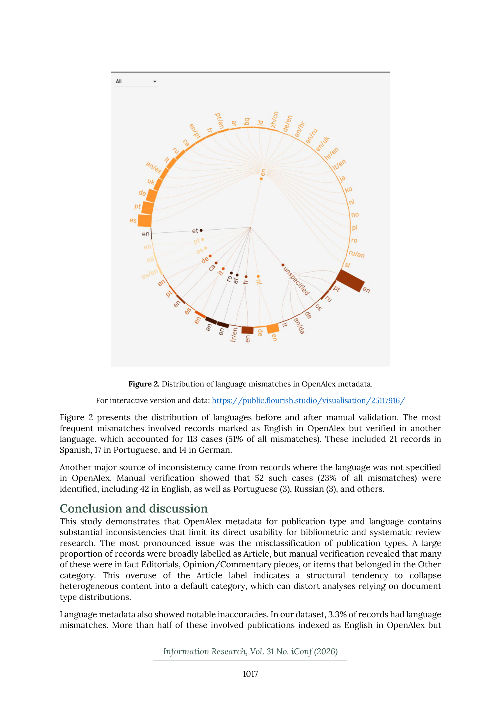

Figure 1
저자: Güleda Dogan, Ayça Nur Sezen | 날짜: 2026-03-20 | Journal: Information Research | DOI: 10.47989/ir31iconf64207
Figure 1
OpenAlex의 출판 유형 및 언어 메타데이터는 얼마나 정확한가? 6,640건의 오픈 피어리뷰 관련 논문을 수동 검증한 결과, 43%(2,878건)에서 출판 유형 불일치, 3.3%(222건)에서 언어 불일치가 발견되었다. 가장 큰 문제는 'Article' 라벨의 과용으로, 실제로는 Editorial, Opinion/Commentary, 기타 유형인 자료들이 모두 'Article'로 분류되어 있었다. Crossref 유형과 비교 시 Peer Review와 Proceeding Paper 범주에서 OpenAlex와의 괴리가 특히 컸다.

Figure 2
OpenAlex는 MAG의 후속으로 무료 대규모 학술 데이터베이스로서 계량서지학 연구에 널리 사용되고 있다. 그러나 메타데이터의 정확성에 대한 우려가 지속적으로 제기되어 왔으며, 특히 문서 유형과 언어 필드는 체계적 리뷰와 계량서지학 분석에서 포함/제외 기준으로 직접 사용되므로, 이들의 정확성이 하류 분석의 타당성에 직결된다.
총평: OpenAlex 메타데이터의 구체적 품질 문제를 체계적으로 문서화한 유용한 연구로, 계량서지학 연구자들에게 데이터 전처리의 중요성을 환기시킨다.